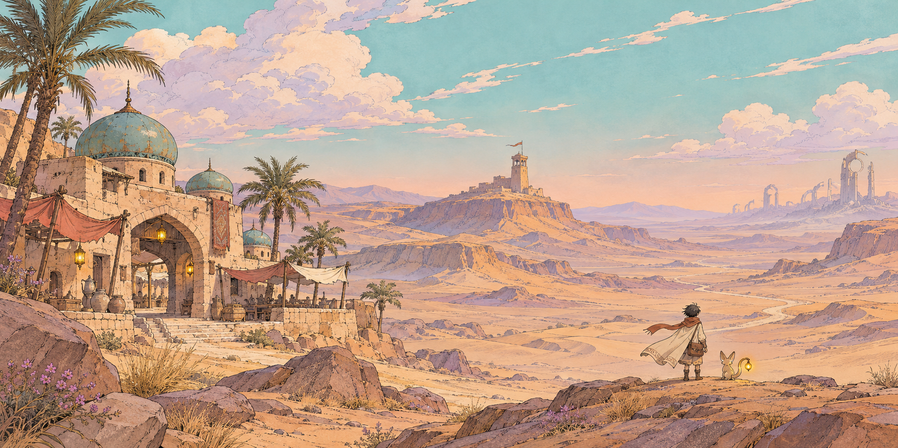
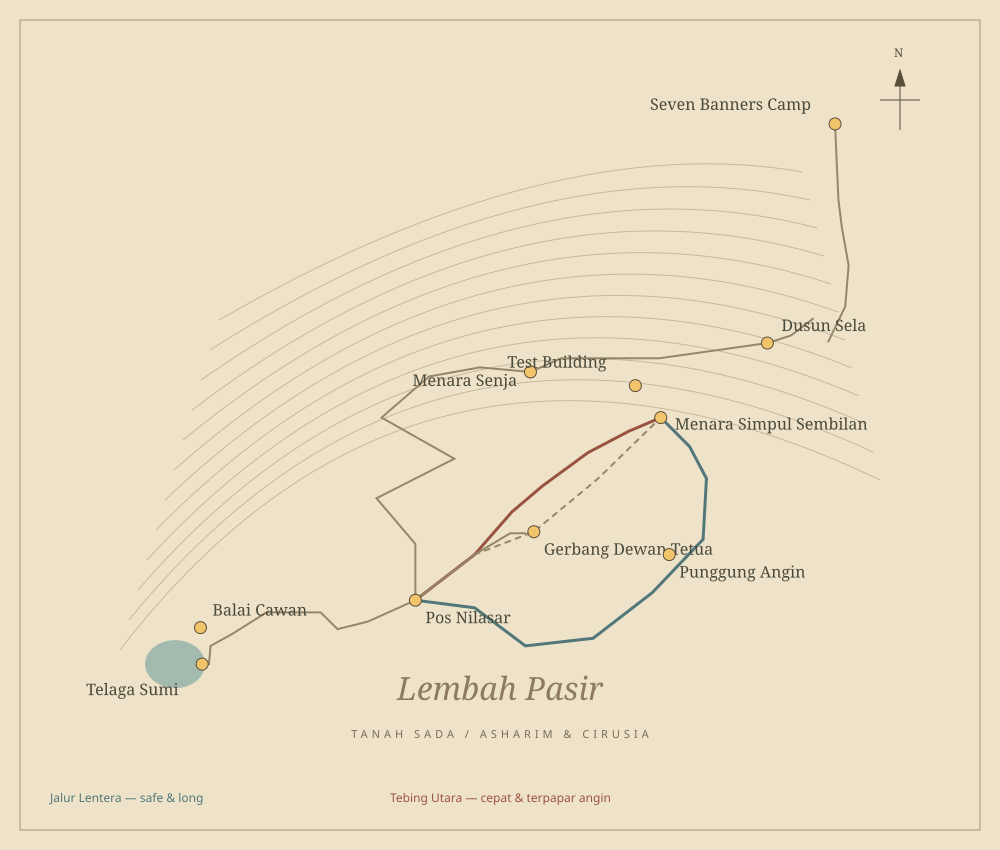
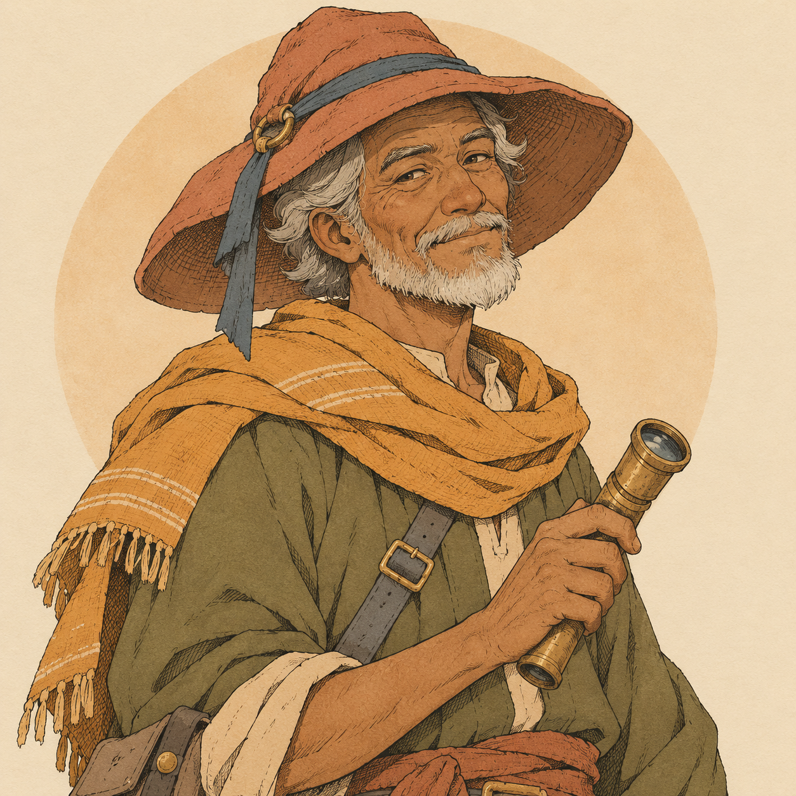
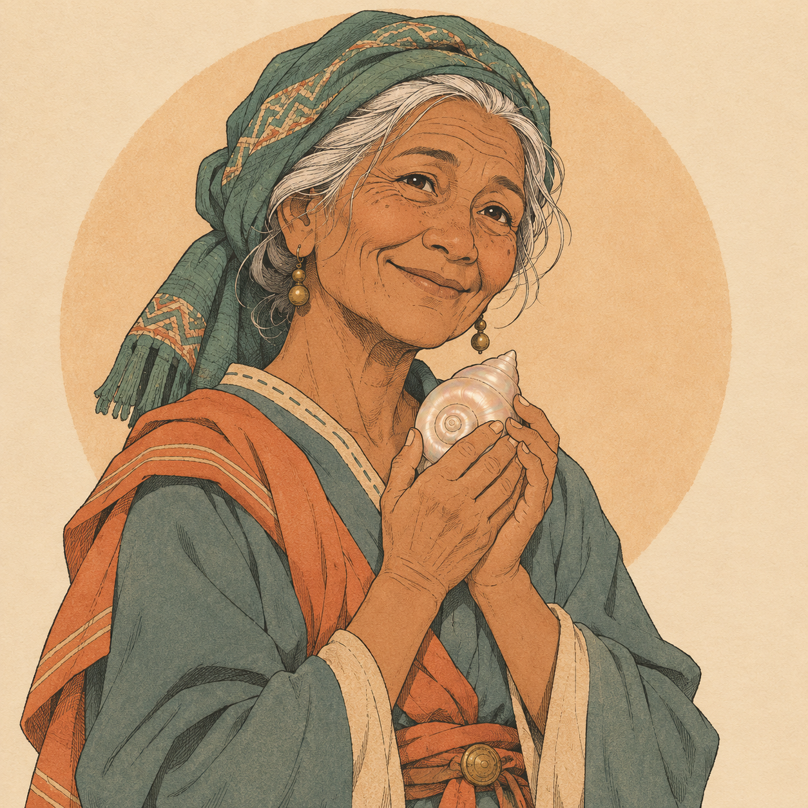
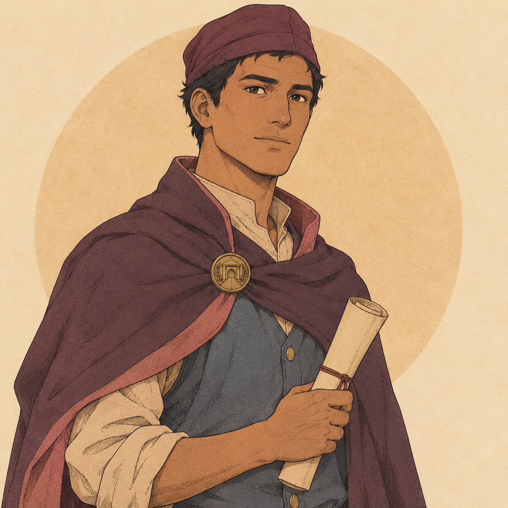
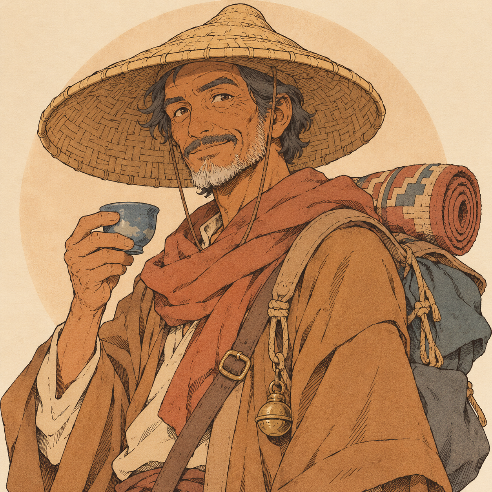
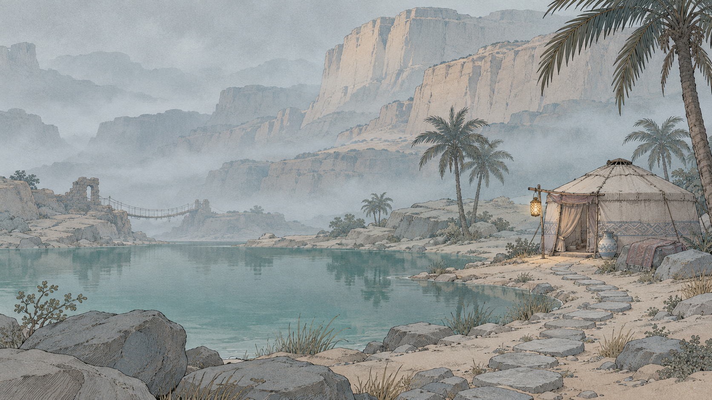
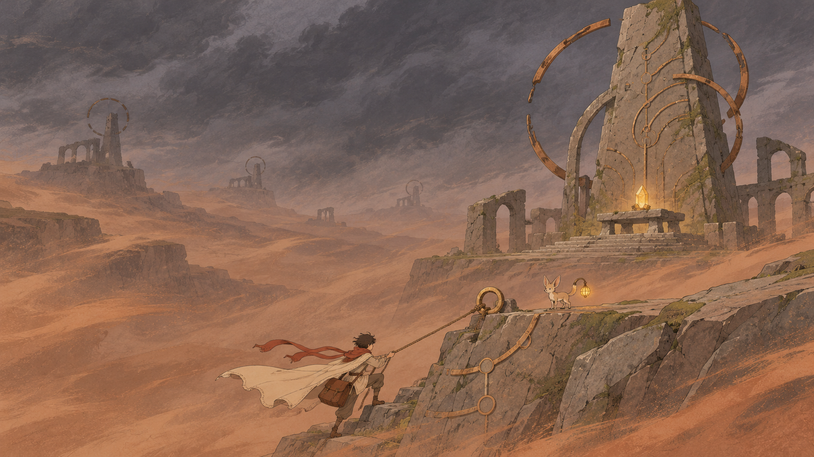

IKATAN PENGANTAR · LEMBAH PASIR
Atlas
Tanah Sada.
Wajah yang menunggu. Jalan yang menyambung. Benda-benda kecil yang membuat perjalanan berarti.
Pustaka visual demo Jalur Senyap, dari potret dalam Buku Jalur hingga model yang menghuni dunianya.

TAHUN 100 TELAN · LIMA BANGSA
Satu jalur. Lima cara menjaga kabar.
Pilih bangsa untuk melihat fondasi kontrak Pra-Simpul, geopolitik, dinamika faksi internal, dan adat penjagaan kabar di Tanah Sada. Ilustrasi konsep mengikuti kanon visual Jalur Senyap.
I. BENTUK & GERAK
Kenali dari segala sisi.
Putar model yang digunakan game. Siluet jubah, telinga Ruru, dan cahaya lentera menjadi penanda perjalanan.
Pratinjau 3D memerlukan WebGL. Potret, peta, dan seluruh aset 2D tetap bisa dilihat di bawah.
Tarik untuk memutar · tombol panah saat pratinjau terfokus · skala model diseragamkan untuk katalog.
II. JALAN & TUJUAN
Satu lembah. Banyak cara melintas.
Pos Batu Biru menjadi rumah singgah. Menara Batu Senja, Telaga Sumi, dan Simpul Sembilan menyimpan tiga alasan untuk kembali berjalan.

III. ORANG-ORANG DI JALUR
Setiap paket punya wajah.
Potret 2D untuk percakapan dan Buku Jalur. Palet tenang, tinta sepia, dan satu ciri yang mudah diingat untuk setiap tokoh.

Nara
Kurir magang · tas yang mewarisi rahasia

Ruru
Pendamping · penunjuk jalan kecil

Maren
Kepala Pos Batu Biru · hangat dan penuh ingatan

Juma
Penjaga menara · mata yang membaca angin

Bu Lamat
Tetua Telaga Sumi · menunggu sebuah lagu

Kesa
Petugas tol · di antara perintah dan nurani

Pedagang lembah
Pengembara · kabar selalu berjalan dengannya
“Kamu mengantar
lebih dari yang
kamu tahu.”
BU LAMAT / TELAGA SUMI
IV. SUASANA DUNIA
Hangat. Sunyi. Tidak selalu ramah.
Tiga ilustrasi suasana mendampingi dunia 3D. Bukan geometri yang bisa dilalui: pemandangan ini hadir sebagai gambar pembuka dan catatan wilayah.
Lembah Pasir
Caravanserai, roti rempah, dan cahaya yang mengundang pulang.

Telaga Sumi
Sebuah lagu menyeberangi lembah yang kehilangan cakrawala.

Simpul Sembilan
Surat yang belum sampai. Menara yang belum sepenuhnya diam.
V. BENDA-BENDA PERJALANAN
Dibawa, dipasang, ditemukan.
Perlengkapan kurir, paket cerita, dan unsur dunia. Pilih satu untuk melihat model 3D yang sama dengan aset game.
VI. BAHASA TANDA
Satu goresan, satu petunjuk.
24 ikon SVG lokal. Garis sepia, sudut membulat, dan aksen kuning lentera. Dibuat untuk tetap terbaca sebagai tanda kecil di layar.
CATATAN PRODUKSI
Tentang pustaka ini.
Ilustrasi 2D: tujuh potret, tiga pemandangan demo, dan lima ilustrasi bangsa dibuat dengan ImageGen untuk proyek ini. Model 3D: tujuh karakter beranimasi dan 17 properti dibangun dari geometri prosedural dalam src/art.js; bukan hasil konversi otomatis potret menjadi model. Peta dan ikon: aset SVG yang dapat diedit.
Pratinjau menggunakan satu renderer Three.js lokal. Seluruh gambar, model, dan ikon dapat dibuka tanpa layanan eksternal. Skala pratinjau dinormalisasi untuk perbandingan bentuk; ukuran dalam game mengikuti penempatan dunia.